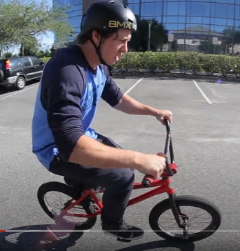
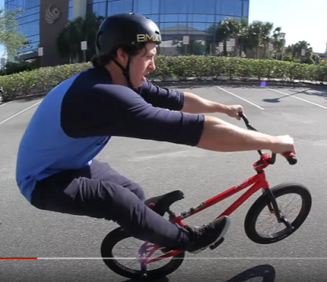

A manual is a trick where you lift up the front wheel of the bike, then balance on the rear wheel without pedalling. We will go over the steps to properly perform a manual in the following steps
1. Grab your bicycle, helmet, and other preferred safety gear.
2. Find an open, flat area such as an empty parking lot to give you the space and safety for the trick.
Parking lots also typically have lines which are nice to track how long you've held up the manual.
3. Ride in a straight line at a light jogging pace and practice transferring your body weight from over
the front wheel with bent arms to over the rear wheel with straight arms. This will lift the front of the bike.
 
4. Practice lifting up too far to the point where the bike flips back and your are forced to hop off the pedals onto your feet.
This will help you get comfortable bailing off the back of the bike when you lift it too much.
The balance position is very close to the flipping position which makes being ready for the flip essential to prevent injury.
NOTE: Upon lifting the front end, there will be a point where it feels like the bike is able to balance if only for a moment.
It is this spot that needs to be maintained to keep the manual up.
5. Repeat "Step 3" while bending/extending your legs to shift your weight higher/lower in order to maintain the balance position.
This will take countless attempts to perfect and is where the real effort and persistence begins.
I have been riding BMX for the better part of 20 years and am still improving.